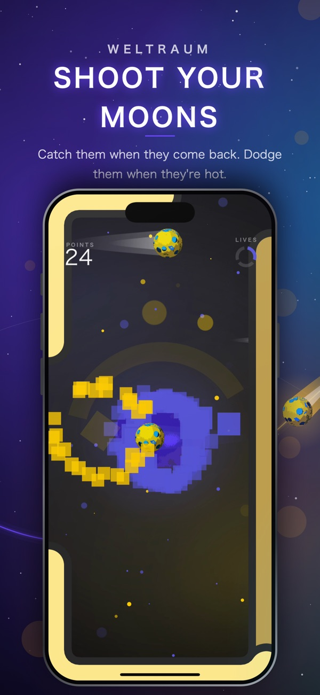
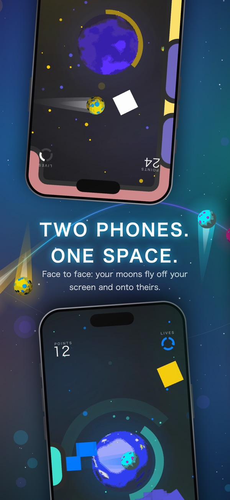
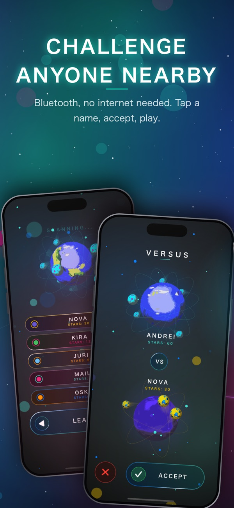
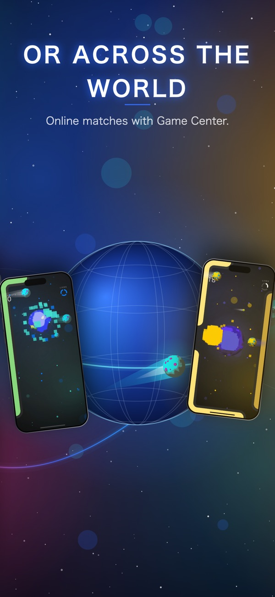
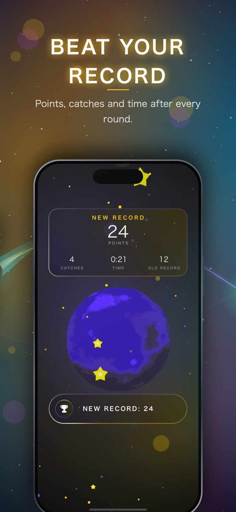
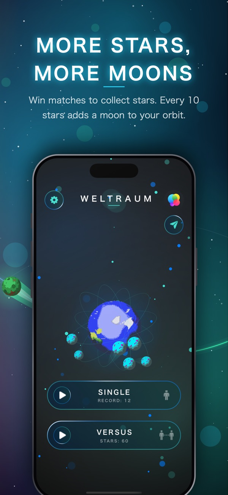

Weltraum
A minimalist space arcade about timing, orbits and a steady thumb. You are a small planet, and your moons fly off one edge of the screen and come back from the other.

- FIRST RELEASED
- 2018-07-26
- LATEST VERSION
- 1.6
- LANGUAGES
- 10
- PRICE
- Free
What if space were round?
Whatever leaves one side of the screen comes back from the other. Lines at the edge show where a moon will return, so you swipe up or down to meet it and catch it. Miss one and it turns hot: hot moons can't be caught, only dodged, and each one that hits you costs a life.
-
01
Swipe to launch
Swipe left or right to send a moon on its way. Every move in the game is a swipe: left, right, up, down.
-
02
Versus, face to face
Over Bluetooth your moons leave your screen and land on your rival's. Online matches run through Game Center.
-
03
Stars grow your orbit
Win stars in Versus: every 10 stars adds another moon. Pick the colours of your planet and its moons.
From the App Store






One codebase, two names
Weltraum first came out on 26 July 2018 as Kpy on the App Store. The whole codebase carried over into Weltraum, and version 1.6 is the biggest update since: a glowing new look, comet trails behind every moon, a guided tour with a globe that shows how round space works, and a result card after every round.